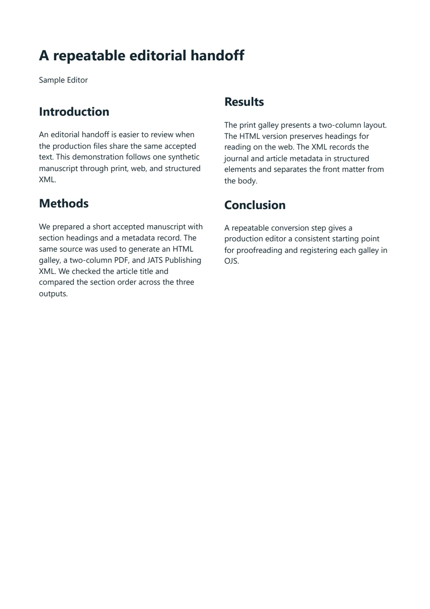

Rhema Production Notes
A repeatable editorial handoff
A synthetic production note for comparing the print, web, and structured outputs from one accepted manuscript.
Volume 1 · Issue 1
Academic journal production
From accepted draft to finished issue.
Inspect the proofsRhema Production Notes
A synthetic production note for comparing the print, web, and structured outputs from one accepted manuscript.
Volume 1 · Issue 1

HTML galley
Sample Editor
An editorial handoff is easier to review when the production files share the same accepted text.
JATS Publishing 1.2
<article-meta>
<title-group>
<article-title>
A repeatable editorial handoff
</article-title>
</title-group>
</article-meta>One accepted Word manuscript. Three publication formats.
Download StudioInspect the print layout, web galley, and structured XML from the same synthetic production note. Each output has a SHA-256 checksum.
Download the source DOCX Download the article metadata Download the checksum manifestA two-column layout for reading and proofing.
Standalone HTML for reading in a browser.
Article metadata and body in JATS Publishing 1.2.
<article-meta>
<title-group>
<article-title>A repeatable editorial handoff</article-title>
</title-group>
<contrib-group>
<contrib contrib-type="author">
<name>
<surname>Editor</surname>
<given-names>Sample</given-names>
</name>
</contrib>
</contrib-group>
<pub-date date-type="pub" publication-format="electronic" iso-8601-date="2026-11-23">
<day>23</day>
<month>11</month>
<year>2026</year>
</pub-date>
<volume>1</volume>
<issue>1</issue>
<permissions>
</permissions>
<abstract>
<p>A synthetic production note for comparing the print, web, and structured outputs from one accepted manuscript.</p>
</abstract>
</article-meta>Process files locally with Python and Pandoc. The optional registration companion was verified on a test OJS 3.5.0.4 installation.
Read the OJS production guideThe download includes the GNU GPL version 3 license. For hands-on production help, ask about your manuscript, outputs, and deadline.